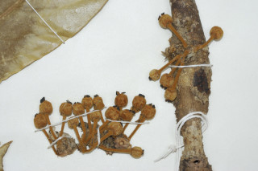
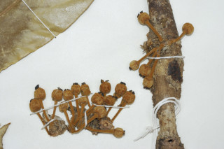

Trees up to 20 m tall.
20 ಮೀ. ಎತ್ತರದವರೆಗೆ ಮರಗಳು.
20 മീറ്റര് വരെ ഉയരമുള്ള മരങ്ങള്.
மரங்கள் 20 மீ. உயரம் வரை வளரக்கூடியது.
Branchlets terete, densely brown tomentose.
ಕಿರುಕೊಂಬೆಗಳು ದುಂಡಾಗಿರುತ್ತವೆ ಹಾಗೂ ದಟ್ಟವಾದ ಕಂದು ಬಣ್ಣದ ಮೃದು ತುಪ್ಪಳದಿಂದ ಕೂಡಿರುತ್ತವೆ.
കനത്തില് തവിട്ട് രോമാവൃതമായ, ഉരുണ്ട ഉപശാഖകള്.
சிறிய நுனிக்கிளைகள் குறுக்குவெட்டுத் தோற்றத்தில் வளையமானது, அடர்த்தியாக ப்ரவுன் நிறமான உரோமங்களுடையது.
Leaves simple, alternate, distichous; stipules linear - lanceolate, to 0.6 cm long, in pairs, brown tomentose; petiole 0.5-0.6 cm long, terete, brown tomentose; lamina 14-27 x 3-8.5 cm, oblong, apex gradually or abruptly acuminate, base asymmetric, margin usually entire or distantly serrate, subcoriaceous, densely brown tomentose on midrib beneath, glabrous above; midrib flat above; secondary_nerves 7-10 pairs; tertiary_nerves horizontally reticulo-percurrent.
ಎಲೆಗಳು ಸರಳವಾಗಿದ್ದು ಪರ್ಯಾಯ ಜೋಡನಾ ವ್ಯವಸ್ಥೆಯಲ್ಲಿದ್ದು ಕಾಂಡದ ಎರಡೂ ಕಡೆ ಎದುರು ಬದರಿನ ಲಂಬಸಾಲಿನಲ್ಲಿರುತ್ತವೆ;ಕಾವಿನೆಲೆಗಳು ರೇಖಾತ್ಮಕ-ಭರ್ಜಿಯ ಆಕಾರದಲ್ಲಿದ್ದು 0.6 ಸೆಂ.ಮೀ. ವರೆಗಿನ ದ್ದ ಹೊಂದಿರುತ್ತವೆ; ತೊಟ್ಟುಗಳು 0.5-0.6 ಸೆಂ.ಮೀ. ಉದ್ದವಿದ್ದು, ದುಂಡಾಗಿರುತ್ತವೆ ಹಾಗೂ ಕಾಲುವೆಗೆರೆ ಸಮೇತವಿರುತ್ತವೆ ಹಾಗೂ ಕಂದು ಬಣ್ಣದ ಮೃದು ತುಪ್ಪಳದಿಂದ ಕೂಡಿರುತ್ತವೆ; ಪತ್ರಗಳು14 - 27 X 3 – 8.5 ಸೆಂ ಮೀ. ಗಾತ್ರ, ಚತುರಸ್ರದ ಆಕಾರ ಹೊಂದಿರುತ್ತವೆ; ಪತ್ರಗಳ ತುದಿ ಕ್ರಮೇಣವಾಗಿ ಅಥವಾ ಥಟ್ಟನೆ ಚೂಪಾಗುವ ಮಾದರಿಯಲ್ಲಿದ್ದು ಬುಡ ಅಸಮವಾಗಿರುತ್ತದೆ; ಅಂಚು ಸಾಮಾನ್ಯವಾಗಿ ನಯವಾಗಿರುತ್ತದೆ; ಮೇಲ್ಮೈ ಉಪ-ತೊಗಲನ್ನೋಲುವ ಮಾದರಿಯಲ್ಲಿರುತ್ತದೆ; ಪತ್ರದ ತಳ ಭಾಗದ ಮಧ್ಯ ನಾಳ ಕಂದು ಬಣ್ಣದ ದಟ್ಟ ಮೃದು ತುಪ್ಪಳ ದಿಂದ ಕೂಡಿರುತ್ತದೆ ಮತ್ತು ಮೇಲ್ಭಾಗದಲ್ಲಿ ರೋಮ- ರಹಿತವಾಗಿರುತ್ತದೆ;ಮಧ್ಯನಾಳ ಪತ್ರದ ಮೇಲ್ಭಾಗದಲ್ಲಿ ಚಪ್ಪಟೆಯಾಗಿರುತ್ತದೆ; ಎರಡನೇ ದರ್ಜೆಯ ನಾಳಗಳು 7-10 ಜೋಡಿಗಳಿರುತ್ತವೆ; ಮೂರನೇ ದರ್ಜೆಯ ನಾಳಗಳು ಲಂಬ ರೇಖೆಗೆ ಸಮಕೋನದಲ್ಲಿದ್ದು ಎಲೆ ದಿಂಡಿಗೆ ಅಡ್ಡಕೂಡುವಂತವು.
ലഘുവായ ഇലകള്, ഏകാന്തര ക്രമത്തില്, തണ്ടിന്റെ രണ്ടുഭാഗത്ത് മാത്രമായടുക്കിയ വിധത്തിലാണ്; തവിട്ട് രോമങ്ങള് നിറഞ്ഞ, 0.6 സെ.മീ വരെ നീളമുള്ള രേഖീയ കുന്താകാരത്തിലുള്ള അനുപര്ണ്ണങ്ങള് ജോഡികളായുണ്ടാകുന്നു; തവിട്ട് രോമിലമായ, ഉരുണ്ട ഇലഞെട്ടിന് 0.5 സെ.മീ മുതല് 0.6 സെ.മീ വരെ നീളം; പത്രഫലകത്തിന് 14 സെ.മീ മുതല് 27 സെ.മീ വരെ നീളവും 3 സെ.മീ മുതല് 8.5 സെ.മീ വരെ വീതിയും, ആയതാകാരവുമാണ്, സാവധാനത്തിലോ പെട്ടന്നോ അവസാനിക്കുന്ന ദീര്ഘാഗ്രം, പത്രാധാരം അസമമാണ്, അരികുകള് സാധാരണയായി അവിഭജിതമാണ്, ഉപചര്മ്മില പ്രകൃതം, കീഴെ മുഖ്യസിരയില് കനത്തില് തവിട്ട് രോമിലമാണ്, മുകളില് അരോമിലവും; മുഖ്യസിര മുകളില് പരന്നതാണ്; 7 മുതല് 10 വരെ ജോഡി ദ്വിതീയ ഞരമ്പുകള്; തിരശ്ചീനമായി ജാലിത-പെര്കറന്റ് വിധത്തിലുള്ള ത്രിതീയ ഞരമ്പുകള്.
இலைகள் தனித்தவை, மாற்றுஅடுக்கமானவை, இருநெடுக்கு வரிசையிலையடுக்கம் (டைஸ்டிக்கஸ்); இலையடிச்செதில் கோட்டு-ஈட்டி வடிவானது, 0.6 செ.மீ. நீளமானது, ஓர் ஜோடியுடையது, ப்ரவுன் நிறமான உரோமங்களுடையது; இலை அலகு 14-27 X 3-8.5 செ.மீ., நீள்சதுர வடிவானது, அலகின் நுனி நீண்ட அல்லது குட்டையான அதிக்கூரியது, அலகின் தளம் சமமற்றது, அலகின் விளிம்பு பொதுவாக முழுமையானது, சப்கோரியேசியஸ், அலகின் பின்புறத்தில் அடர்த்தியான ப்ரவுன் நிறமான உரோமங்களுடைய மையநரம்பு கொண்டது, அலகின் மேற்பரப்பு உரோமங்களற்றது; மையநரம்பு மேற்பரப்பில் அலகின் மேற்பரப்பிற்கு சமமானது; இரண்டாம் நிலை நரம்புகள் 7-10 ஜோடிகளுடையது; மூன்றாம் நிலை நரம்புகள் விளிம்பை நோக்கிய வலைப்பின்னல்-பெர்க்கரண்ட்.
Flowers unisexual, dioecious, in axillary or lateral clusters on older branches.
ಹೂಗಳು ಏಕಲಿಂಗಿಗಳಾಗಿರುತ್ತವೆ ಮತ್ತು ಗಂಡು ಮತ್ತು ಹೆಣ್ಣು ಹೂಗಳು ಪ್ರತ್ಯೇಕ ಸಸ್ಯಗಳಲ್ಲಿದ್ದು ಅಕ್ಷಾಕಂಕುಳಿನಲ್ಲಿ ಅಥವಾ ಪಾರ್ಶ್ವ ಭಾಗದಲ್ಲಿದ್ದು ಹಳೆ ಕವಲುಗಳ ಮೇಲೆ ಗುಚ್ಛಗಳಲ್ಲಿರುತ್ತವೆ.
മൂത്ത ശാഖകളില്, കക്ഷീയമോ ഉച്ഛസ്ഥമോ ആയ കൂട്ടങ്ങളായുണ്ടാകുന്ന പൂക്കള് ഏകലിംഗികളും ഡയീഷ്യസുമാണ്.
மலர்கள் ஓர்பாலானவை, ஈரகம் கொண்டவை, இலைக்கோணங்கள் அல்லது முதிர்ந்த தண்டின் பக்கவாட்டில் கொத்தாக காணப்படுபவை.
Drupe, globose, brown tomentose, stalked.
ಸಂಪುಟ ಫಲಗಳು ಗೋಳಾಕಾರದಲ್ಲಿದ್ದು ಕಂದು ಬಣ್ಣದ ದಟ್ಟ ಮೃದು ತುಪ್ಪಳದಿಂದ ಕೂಡಿದ್ದು ತೊಟ್ಟು ಸಮೇತವಾಗಿರುತ್ತವೆ.
തണ്ടോടു കൂടിയ, ഗോളാകാരത്തിലുള്ള കായ, തവിട്ട് രോമിലമായ ഡ്രൂപ്പ് ആണ്.
உள்ளோட்டுத்தசைகனி (ட்ரூப்), கோளவடிவானது, ப்ரவுன் நிறமான உரோமங்களுடையது, காம்புடையது.
 
